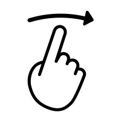
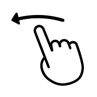

The idea of the recipeswiper is that you swipe on the given recipes and based on your swipes, we will give some recipe suggestion we think you will like.
When presented with the recipe you can scroll down to view the rest of the recipe.
To indicate that you like a recipe, you can swipe from left to right.
To indicate that you do not like a recipe, you can swipe from right to left.
Our program will have a hard time if you swipe left on all recipes, so for the best result you should swipe right sometimes.